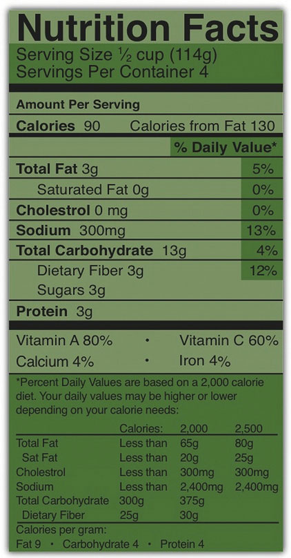

Cells are about 75 percent water and blood plasma is about 95 percent water. Why then, does the water not flow from blood plasma to cells? The maintenance of the unequal volumes of water between fluid compartments is achieved by balancing the force of water (hydrostatic pressure) against the force of all dissolved substances. ConcentrationThe amount of particles in a set volume of water. means the amount of particles in a set volume of water. (Recall that individual solutes can differ in concentration between the intracellular and extracellular fluids, but the total concentration of all dissolved substances is equal.)
The force driving the water movement through the selectively permeable membrane is the higher solute concentration on the one side. Solutes at different concentrations on either side of a selectively permeable membrane exert a force, called osmotic pressureThe force exerted by solutes at different concentrations on either side of a selectively permeable membrane.. The higher concentration of solutes on one side compared to the other of the U-tube exerts osmotic pressure, pulling the water to a higher volume on the side of the U-tube containing more dissolved particles. When the osmotic pressure is equal to the pressure of the water on the selectively permeable membrane, net water movement stops (though it still diffuses back and forth at an equal rate).
One equation exemplifying equal concentrations but different volumes is the following
5 grams of glucose in 1 liter = 10 grams of glucose in 2 liters (5g/L = 5g/L)The differences in concentrations of particular substances provide concentration gradients that cells can use to perform work. A concentration gradient is a form of potential energy, like water above a dam. When water falls through a dam the potential energy is changed to moving energy (kinetic), that in turn is captured by turbines. Similarly, when an electrolyte at higher concentration in the extracellular fluid is transported into a cell, the potential energy is harnessed and used to perform work.
Cells are constantly transporting nutrients in and wastes out. How is the concentration of solutes maintained if they are in a state of flux? This is where electrolytes come into play. The cell (or more specifically the numerous sodium-potassium pumps in its membrane) continuously pumps sodium ions out to establish a chemical gradient. The transport protein, called the glucose symporter, uses the sodium gradient to power glucose movement into the cell. Sodium and glucose both move into the cell. Water passively follows the sodium. To restore balance, the sodium-potassium pump transfers sodium back to the extracellular fluid and water follows (see Note 7.26 "Interactive 7.1"). Every cycle of the sodium-potassium pump involves the movement of three sodium ions out of a cell, in exchange for two potassium ions into a cell. To maintain charge neutrality on the outside of cells every sodium cation is followed by a chloride anion. Every cycle of the pump costs one molecule of ATP (adenosine triphosphate). The constant work of the sodium-potassium pump maintains the solute equilibrium and consequently, water distribution between intracellular and extracellular fluids.
The unequal movement of the positively charged sodium and potassium ions makes intracellular fluid more negatively charged than the extracellular fluid. This charge gradient is another source of energy that a cell uses to perform work. You will soon learn that this charge gradient and the sodium-potassium pump are also essential for nerve conduction and muscle contraction. The many functions of the sodium-potassium pump in the body account for approximately a quarter of total resting energy expenditure.
View this animation of the sodium-potassium pump maintaining fluid balance in cells.
http://nutrition.jbpub.com/resources/animations.cfm?id=27&debug=0
The sodium-potassium pump is the primary mechanism for cells to maintain water balance between themselves and their surrounding environment.
Sodium, is vital not only for maintaining fluid balance but also for many other essential functions. In contrast to many minerals, sodium absorption in the small intestine is extremely efficient and in a healthy individual all excess sodium is excreted by the kidneys. In fact, very little sodium is required in the diet (about 200 milligrams) because the kidneys actively reabsorb sodium. Kidney reabsorption of sodium is hormonally controlled, allowing for a relatively constant sodium concentration in the blood.
The second notable function of sodium is in nerve impulse transmission. Nerve impulse transmission results from the transport of sodium cations into a nerve cell, which creates a charge difference (or voltage) between the nerve cell and its extracellular environment. Similar to how a current moves along a wire, a sodium current moves along a nerve cell. Stimulating a muscle contraction also involves the movement of sodium ions as well as other ion movements. For a muscle to contract, a nerve impulse travels to a muscle. The movement of the sodium current in the nerve communicates to the muscle by releasing the neurotransmitter, acetylcholine. Acetylcholine signals sodium channels in the muscle to open and sodium rushes in, creating another current that travels along the muscle eventually culminating in contraction. In both the nerve cell and the muscle cell, the sodium that went in during a stimulus now has to be moved out by the sodium-potassium pump.
Sodium is essential for nutrient absorption in the small intestine and also for nutrient reabsorption in the kidney. Amino acids, glucose, and water must make their way from the small intestine to the blood. To do so they pass through intestinal cells on their way to the blood. The transport of nutrients through intestinal cells is facilitated by the sodium-potassium pump, which by moving sodium out of the cell, creates a higher sodium concentration outside of the cell (requiring ATP).
Sweating is a homeostatic mechanism for maintaining body temperature, which influences fluid and electrolyte balance. Sweat is mostly water but also contains some electrolytes, mostly sodium and chloride. Under normal environmental conditions (i.e., not hot, humid days) water and sodium loss through sweat is negligible, but is highly variable among individuals. It is estimated that sixty minutes of high-intensity physical activity, like playing a game of tennis, can produce approximately one liter of sweat; however the amount of sweat produced is highly dependent on environmental conditions. A liter of sweat typically contains between 1 and 2 grams of sodium and therefore exercising for multiple hours can result in a high amount of sodium loss in some people. Additionally, hard labor can produce substantial sodium loss through sweat. In either case, the lost sodium is easily replaced in the next snack or meal.
In athletes hyponatremia, or a low blood-sodium level, is not so much the result of excessive sodium loss in sweat, but rather drinking too much water. The excess water dilutes the sodium concentration in blood. Illnesses causing vomiting, sweating, and diarrhea may also cause hyponatremia. The symptoms of hyponatremia, also called water intoxication since it is often the root cause, include nausea, muscle cramps, confusion, dizziness, and in severe cases, coma and death. The physiological events that occur in water intoxication are the following:
Hyponatremia in endurance athletes (such as marathon runners) can be avoided by drinking the correct amount of water, which is about 1 cup every twenty minutes during the event. Sports drinks are better at restoring fluid and blood-glucose levels than replacing electrolytes. During an endurance event you would be better off drinking water and eating an energy bar that contains sugars, proteins, and electrolytes. The American College of Sports Medicine suggests if you are exercising for longer than one hour you eat one high carbohydrate (25–40 grams) per hour of exercise along with ample water.Convertino, V. A. et al. “American College of Sports Medicine Position Stand. Exercise and Fluid Replacement.” US National Library of Medicine, National Institutes of Health. Medicine and Science in Sports and Exercise 28, no. 1 (January 1996): i–vii. http://www.ncbi.nlm.nih.gov/pubmed/9303999. Watch out for the fat content, as sometimes energy bars contain a hefty dose. If you’re not exercising over an hour at high intensity, you can skip the sports drinks, but not the water. For those who do not exercise or do so at low to moderate intensity, sports drinks are another source of extra calories, sugar, and salt.
The IOM has set an AI level for sodium for healthy adults between the ages of nineteen and fifty at 1.5 grams (1,500 milligrams). (See Table 7.2 "Dietary Reference Intakes for Sodium".) Table salt is approximately 40 percent sodium and 60 percent chloride. As a reference point, only ⅔ teaspoon of salt is needed in the diet to meet the AI for sodium. The AI takes into account the amount of sodium lost in sweat during recommended physical activity levels and additionally provides for the sufficient intake of other nutrients, such as chloride, meaning that to get all the other nutrients in our diet, we have to allow for a higher intake of sodium. The Tolerable Upper Intake Level (UL) for sodium is 2.3 grams per day for adults. (Just over 1 teaspoon of salt contains the 2.3 grams of sodium recommended). The UL is considered appropriate for healthy individuals but not those with hypertension (high blood pressure). The IOM estimates that greater than 95 percent of men and 75 percent of women in America consume salt in excess of the UL. Many scientific studies demonstrate that reducing salt intake prevents hypertension, is helpful in reducing blood pressure after hypertension is diagnosed, and reduces the risk for cardiovascular disease. The IOM recommends that people over fifty, African Americans, diabetics, and those with chronic kidney disease should consume no more than 1.5 grams of sodium per day. The American Heart Association (AHA) states that all Americans, not just those listed, should consume less than 1.5 grams of sodium per day to prevent cardiovascular disease. The AHA recommends this because millions of people have risk factors for hypertension and there is scientific evidence supporting that lower-sodium diets are preventive against hypertension.
Table 7.2 Dietary Reference Intakes for Sodium
| Age Group | Adequate Intake (mg/day) | Tolerable Upper Intake Level (mg/day) |
|---|---|---|
| Infants (0–6 months) | 120 | ND |
| Infants (6–12 months) | 370 | ND |
| Children (1–3 years) | 1,000 | 1,500 |
| Children (4–8 years) | 1,200 | 1,900 |
| Children (9–13 years) | 1,500 | 2,200 |
| Adolescents (14–18 years) | 1,500 | 2,300 |
| Adults (19–50 years) | 1,500 | 2,300 |
| Adults (50–70 years) | 1,300 | 2,300 |
| Adults (> 70 years) | 1,200 | 2,300 |
| ND = not determined | ||
Source: Institute of Medicine. Dietary Reference Intakes: Water, Potassium, Sodium, Chloride, and Sulfate. February 11, 2004. http://www.iom.edu/Reports/2004/Dietary-Reference-Intakes-Water-Potassium-Sodium-Chloride-and-Sulfate.aspx.
Most sodium in the typical American diet comes from processed and prepared foods. Manufacturers add salt to foods to improve texture and flavor, and also as a preservative. The amount of salt in similar food products varies widely. Some foods, such as meat, poultry, and dairy foods, contain naturally-occurring sodium. For example, one cup of low-fat milk contains 107 milligrams of sodium. Naturally-occurring sodium accounts for less than 12 percent of dietary intake in a typical diet. For the sodium contents of various foods see Table 7.3 "Sodium Contents of Selected Foods".
Figure 7.6 Dietary Sources of Sodium

Table 7.3 Sodium Contents of Selected Foods
| Food Group | Serving Size | Sodium (mg) |
|---|---|---|
| Breads, all types | 1 oz. | 95–210 |
| Rice Chex cereal | 1 ¼ c. | 292 |
| Raisin Bran cereal | 1 c. | 362 |
| Granola bar | 1 bar | 83 |
| Frozen pizza, plain, cheese | 4 oz. | 450–1200 |
| Frozen vegetables, all types | ½ c. | 2–160 |
| Salad dressing, regular fat, all types | 2 Tbsp. | 110–505 |
| Salsa | 2 Tbsp. | 150–240 |
| Soup (tomato), reconstituted | 8 oz. | 700–1260 |
| Tomato juice | 8 oz. (~1 c.) | 340–1040 |
| Potato chips | 1 oz. (28.4 g) | 120–180 |
| Tortilla chips | 1 oz. (28.4 g) | 105–160 |
| Pretzels | 1 oz. (28.4 g) | 290–560 |
| Potato | 1 medium | 1–5 |
| Pork | 3 oz. | 59 |
| Chicken | (½ breast) | 69 |
| Chicken fast food dinner | 2243 | |
| Chicken noodle soup | 1 c. | 1107 |
| Ham | 3 oz. | 1114 |
| Dill pickle | 1 | 928 |
| Sweet pickle | 1 | 128 |
| Soy sauce | 1 Tbsp. | 1029 |
| Corn on cob | 1 ear | 1 |
| Canned corn | 1 c. | 384 |
| Baked beans, canned | 1 c. | 856 |
| Hot dog | 1 | 639 |
| Burger, fast-food | 1 | 990 |
| Catsup | 1 Tbsp. | 156 |
| Steak | 3 oz. | 55 |
| Canned tuna | 3 oz. | 384 |
| Fresh tuna | 3 oz. | 50 |
| Dry-roasted peanuts | 1 c. | 986 |
| Cheddar cheese | 1 oz. | 176 |
| American cheese | 1 oz. | 406 |
| Tap water | 8 oz. | 12 |
To find out the sodium content of other foods visit the USDA National Nutrient Database for Standard Reference, Release 17.
http://www.nal.usda.gov/fnic/foodcomp/Data/SR17/wtrank/sr17a307.pdf.
Figure 7.7
Sodium levels in milligrams is a required listing on a Nutrition Facts label.
The Nutrition Facts panel displays the amount of sodium (in milligrams) per serving of the food in question (Figure 7.7). Food additives are often high in sodium, for example, monosodium glutamate (MSG) contains 12 percent sodium. Additionally, baking soda, baking powder, disodium phosphate, sodium alginate, and sodium nitrate or nitrite contain a significant proportion of sodium. When you see a food’s Nutrition Facts label, you can check the ingredients list to identify the source of the added sodium. Various claims about the sodium content in foods must be in accordance with Food and Drug Administration (FDA) regulations (Table 7.4 "Food Packaging Claims Regarding Sodium").
Table 7.4 Food Packaging Claims Regarding Sodium
| Claim | Meaning |
|---|---|
| “Light in Sodium” or “Low in Sodium” | Sodium is reduced by at least 50 percent |
| “No Salt Added” or “Unsalted” | No salt added during preparation and processing* |
| “Lightly Salted” | 50 percent less sodium than that added to similar food |
| “Sodium Free” or “Salt Free” | Contains less than 5 mg sodium per serving |
| “Very Low Salt” | Contains less than 35 mg sodium per serving |
| “Low Salt” | Contains less than 140 mg sodium per serving |
| *Must also declare on package “This is not a sodium-free food” if food is not sodium-free | |
Source: US Food and Drug Administration. “Food Labeling Guide.” Revised October 2009. Accessed October 2, 2011. http://www.fda.gov/Food/GuidanceComplianceRegulatoryInformation/GuidanceDocuments/FoodLabelingNutrition/FoodLabelingGuide/ucm064911.htm.
To decrease your sodium intake, become a salt-savvy shopper by reading the labels and ingredients lists of processed foods and choosing those lower in salt. Even better, stay away from processed foods and control the seasoning of your foods. Eating a diet with less salty foods diminishes salt cravings so you may need to try a lower sodium diet for a week or two before you will be satisfied with the less salty food.
For those with hypertension or those looking for a way to decrease salt use, using a salt substitute for food preparation is one option. However, many salt substitutes still contain sodium, just in lesser amounts than table salt. Also, remember that most salt in the diet is not from table-salt use, but from processed foods. Salt substitutes often replace the sodium with potassium. People with kidney disorders often have problems getting rid of excess potassium in the diet and are advised to avoid salt substitutes containing potassium. People with liver disorders should also avoid salt substitutes containing potassium because their treatment is often accompanied by potassium dysregulation. Table 7.5 "Salt Substitutes" displays the sodium and potassium amounts in some salt substitutes.
Table 7.5 Salt Substitutes
| Product | Serving Size | Sodium (mg) | Potassium (mg) |
|---|---|---|---|
| Salt | 1 tsp. | 2,300 | 0 |
| Mrs. Dash | 1 tsp. | 0 | 40 |
| Spike (Salt-Free) | 1 tsp. | 0 | 96 |
| Veg-It | 1 tsp. | <65 | <65 |
| Adolph’s Sodium-Free Tenderizer | ¼ tsp. | 0 | 420 |
| Accent Low-Sodium Seasoning | 1 tsp. | 600 | 0 |
| Salt Sense | 1 tsp. | 1,560 | 0 |
| Pleasoning Mini-Mini Salt | 1 tsp. | 440 | 0 |
| Morton Lite Salt | 1 tsp. | 1,100 | 1,500 |
| Estee Salt-It | 1 tsp. | 0 | 3,520 |
| Morton Nature’s Seasons | 1 tsp. | 1,300 | 2,800 |
| Morton Salt Substitute | 1 tsp. | 0 | 2,730 |
| No Salt | 1 tsp. | 5 | 2,500 |
| Nu-Salt | 1 tsp. | 0 | 529 |
Source: University of Wisconsin Hospitals and Clinics Authority. “Health Facts for You: Guidelines for a Low Sodium Diet.” March 2011. http://www.uhs.wisc.edu/health-topics/nutrition-fitness-and-heart-health/documents/Sodium.pdf.
Table salt may seem an essential ingredient of good food, but there are others that provide alternative taste and zest to your foods. See Table 7.6 "Salt Alternatives" for an AHA list of alternative food seasonings.
Table 7.6 Salt Alternatives
| Seasoning | Foods |
|---|---|
| Allspice | Lean ground meats, stews, tomatoes, peaches, applesauce, cranberry sauce, gravies, lean meat |
| Almond extract | Puddings, fruits |
| Caraway seeds | Lean meats, stews, soups, salads, breads, cabbage, asparagus, noodles |
| Chives | Salads, sauces, soups, lean-meat dishes, vegetables |
| Cider vinegar | Salads, vegetables, sauces |
| Cinnamon | Fruits, breads, pie crusts |
| Curry powder | Lean meats (especially lamb), veal, chicken, fish, tomatoes, tomato soup, mayonnaise, |
| Dill | fish sauces, soups, tomatoes, cabbages, carrots, cauliflower, green beans, cucumbers, potatoes, salads, macaroni, lamb |
| Garlic (not garlic salt) | Lean meats, fish, soups, salads, vegetables, tomatoes, potatoes |
| Ginger | Chicken, fruits |
| Lemon juice | Lean meats, fish, poultry, salads, vegetables |
| Mace | Hot breads, apples, fruit salads, carrots, cauliflower, squash, potatoes, veal, lamb |
| Mustard (dry) | lean ground meats, lean meats, chicken, fish, salads, asparagus, broccoli, Brussels sprouts, cabbage, mayonnaise, sauces |
| Nutmeg | Fruits, pie crust, lemonade, potatoes, chicken, fish, lean meatloaf, toast, veal, pudding |
| Onion powder | Lean meats, stews, vegetables, salads, soups |
| Paprika | Lean meats, fish, soups, salads, sauces, vegetables |
| Parsley | Lean meats, fish, soups, salads, sauces, vegetables |
| Peppermint extract | Puddings, fruits |
| Pimiento | Salads, vegetables, casserole dishes |
| Rosemary | Chicken, veal, lean meatloaf, lean beef, lean pork, sauces, stuffings, potatoes, peas, lima beans |
| Sage | Lean meats, stews, biscuits, tomatoes, green beans, fish, lima beans, onions, lean pork |
| Savory | Salads, lean pork, lean ground meats, soups, green beans, squash, tomatoes, lima beans, peas |
| Thyme | Lean meats (especially veal and lean pork), sauces, soups, onions, peas, tomatoes, salads |
| Turmeric | Lean meats, fish, sauces, rice |
Source: American Heart Association. “Shaking the Salt Habit.” Updated June 6, 2012. http://www.heart.org/HEARTORG/Conditions/HighBloodPressure/PreventionTreatmentofHighBloodPressure/Shaking-the-Salt-Habit_UCM_303241_Article.jsp.
Do you think many alternative spices are too expensive? Spices are much cheaper in bulk, and many grocery stores and ethnic markets carry them in this way. For example, when purchased in bulk, cumin is, on average, only one dollar per ounce, a quantity that takes many meals to exhaust.
Chloride is the primary anion in extracellular fluid. In addition to passively following sodium, chloride has its own protein channels that reside in cell membranes. These protein channels are especially abundant in the gastrointestinal tract, pancreas, and lungs.
Chloride aids in fluid balance mainly because it follows sodium in order to maintain charge neutrality. Chloride channels also play a role in regulating fluid secretion, such as pancreatic juice into the small intestine and the flow of water into mucus. Fluid secretion and mucus are important for many of life’s processes. Their importance is exemplified in the signs and symptoms of the genetic disease, cystic fibrosis.
Cystic fibrosis, or CF, is one of the most prevalent inherited diseases in people of European descent. It is caused by a mutation in a protein that transports chloride ions out of the cell. CF’s signs and symptoms include salty skin, poor digestion and absorption (leading to poor growth), sticky mucus accumulation in the lungs (causing increased susceptibility to respiratory infections), liver damage, and infertility.
When chloride channels do not transport chloride out of cells, the following signs and symptoms of CF become apparent:
Chloride has several other functions in the body, most importantly in acid-base balance. Blood pH is maintained in a narrow range and the number of positively charged substances is equal to the number of negatively charged substances. Proteins, such as albumin, as well as bicarbonate ions and chloride ions, are negatively charged and aid in maintaining blood pH. Hydrochloric acid (a gastric acid composed of chlorine and hydrogen) aids in digestion and also prevents the growth of unwanted microbes in the stomach. Immune-system cells require chloride, and red blood cells use chloride anions to remove carbon dioxide from the body.
Low dietary intake of chloride and more often diarrhea can cause low blood levels of chloride. Symptoms typically are similar to those of hyponatremia and include weakness, nausea, and headache. Excess chloride in the blood is rare with no characteristic signs or symptoms.
Most chloride in the diet comes from salt. (Salt is 60 percent chloride.) A teaspoon of salt equals 5.6 grams, with each teaspoon of salt containing 3.4 grams of chloride and 2.2 grams of sodium. The chloride AI for adults, set by the IOM, is 2.3 grams. Therefore just ⅔ teaspoon of table salt per day is sufficient for chloride as well as sodium. The AIs for other age groups are listed in Table 7.7 "Adequate Intakes for Chloride".
Table 7.7 Adequate Intakes for Chloride
| Age Group | g/day |
|---|---|
| Infants (0–6 months) | 0.18 |
| Infants (6–12 months) | 0.57 |
| Children (1–3 years) | 1.50 |
| Children (4–8 years) | 1.90 |
| Children (9–13 years) | 2.30 |
| Adolescents (14–18 years) | 2.30 |
| Adults (19–50 years) | 2.30 |
| Adults (51–70 years) | 2.00 |
| Adults (> 70 years) | 1.80 |
Source: Institute of Medicine. Dietary Reference Intakes: Water, Potassium, Sodium, Chloride, and Sulfate. February 11, 2004. http://www.iom.edu/Reports/2004/Dietary-Reference-Intakes-Water-Potassium-Sodium-Chloride-and-Sulfate.aspx.
Chloride has dietary sources other than table salt, namely as another form of salt—potassium chloride. Dietary sources of chloride are: all foods containing sodium chloride, as well as tomatoes, lettuce, olives, celery, rye, whole-grain foods, and seafood. Although many salt substitutes are sodium-free, they may still contain chloride.
In the small intestine, the elements of sodium chloride split into sodium cations and chloride anions. Chloride follows the sodium ion into intestinal cells passively, making chloride absorption quite efficient. When chloride exists as a potassium salt, it is also well absorbed. Other mineral salts, such as magnesium chloride, are not absorbed as well, but bioavailability still remains high.
Potassium is the most abundant positively charged ion inside of cells. Ninety percent of potassium exists in intracellular fluid, with about 10 percent in extracellular fluid, and only 1 percent in blood plasma. As with sodium, potassium levels in the blood are strictly regulated. The hormone aldosterone is what primarily controls potassium levels, but other hormones (such as insulin) also play a role. When potassium levels in the blood increase, the adrenal glands release aldosterone. The aldosterone acts on the collecting ducts of kidneys, where it stimulates an increase in the number of sodium-potassium pumps. Sodium is then reabsorbed and more potassium is excreted. Because potassium is required for maintaining sodium levels, and hence fluid balance, about 200 milligrams of potassium are lost from the body every day.
Nerve impulse involves not only sodium, but also potassium. A nerve impulse moves along a nerve via the movement of sodium ions into the cell. To end the impulse, potassium ions rush out of the nerve cell, thereby decreasing the positive charge inside the nerve cell. This diminishes the stimulus. To restore the original concentrations of ions between the intracellular and extracellular fluid, the sodium-potassium pump transfers sodium ions out in exchange for potassium ions in. On completion of the restored ion concentrations, a nerve cell is now ready to receive the next impulse. Similarly, in muscle cells potassium is involved in restoring the normal membrane potential and ending the muscle contraction. Potassium also is involved in protein synthesis, energy metabolism, and platelet function, and acts as a buffer in blood, playing a role in acid-base balance.
Insufficient potassium levels in the body (hypokalemia) can be caused by a low dietary intake of potassium or by high sodium intakes, but more commonly it results from medications that increase water excretion, mainly diuretics. The signs and symptoms of hypokalemia are related to the functions of potassium in nerve cells and consequently skeletal and smooth-muscle contraction. The signs and symptoms include muscle weakness and cramps, respiratory distress, and constipation. Severe potassium depletion can cause the heart to have abnormal contractions and can even be fatal. High levels of potassium in the blood, or hyperkalemia, also affects the heart. It is a silent condition as it often displays no signs or symptoms. Extremely high levels of potassium in the blood disrupt the electrical impulses that stimulate the heart and can cause the heart to stop. Hyperkalemia is usually the result of kidney dysfunction.
The IOM based their AIs for potassium on the levels associated with a decrease in blood pressure, a reduction in salt sensitivity, and a minimal risk of kidney stones. For adult male and females above the age of nineteen, the adequate intake for potassium is 4.7 grams per day. The AIs for other age groups are listed in Table 7.8 "Adequate Intakes for Potassium".
Table 7.8 Adequate Intakes for Potassium
| Age Group | g/day |
|---|---|
| Infants (0–6 months) | 0.4 |
| Infants (6–12 months) | 0.7 |
| Children (1–3 years) | 3.0 |
| Children (4–8 years) | 3.8 |
| Children (9–13 years) | 4.5 |
| Adolescents (14–18 years) | 4.7 |
| Adults (> 19 years) | 4.7 |
Institute of Medicine. Dietary Reference Intakes: Water, Potassium, Sodium, Chloride, and Sulfate. February 11, 2004. http://www.iom.edu/Reports/2004/Dietary-Reference-Intakes-Water-Potassium-Sodium-Chloride-and-Sulfate.aspx.
Fruits and vegetables that contain high amounts of potassium are spinach, lettuce, broccoli, peas, tomatoes, potatoes, bananas, apples and apricots. Whole grains and seeds, certain fish (such as salmon, cod, and flounder), and meats are also high in potassium. The Dietary Approaches to Stop Hypertension (DASH diet) emphasizes potassium-rich foods and will be discussed in greater detail in the next section.
High Potassium Foods
(click to see video)This slideshow pictures foods high in potassium, with its percentage of the Recommended Daily Allowance.
Greater than 90 percent of dietary potassium is absorbed in the small intestine. Although highly bioavailable, potassium is a very soluble mineral and easily lost during cooking and processing of foods. Fresh and frozen foods are better sources of potassium than canned.
Read the following article from ScienceDaily and discuss why salt is so prevalent in the diet.
http://www.sciencedaily.com/releases/2009/03/090310152329.htm